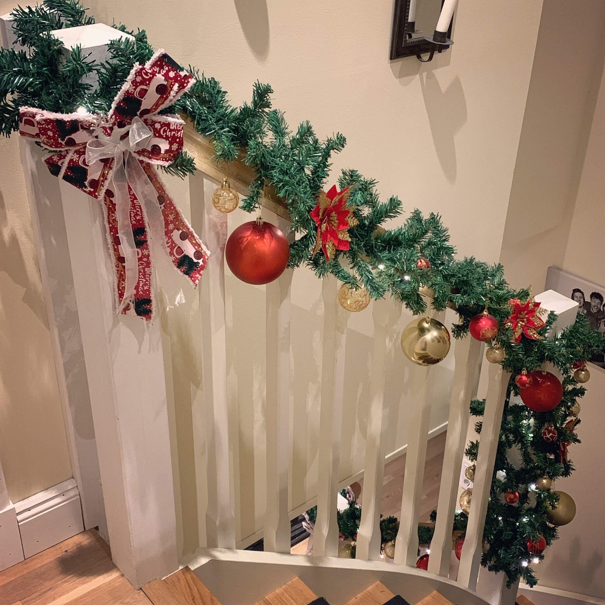
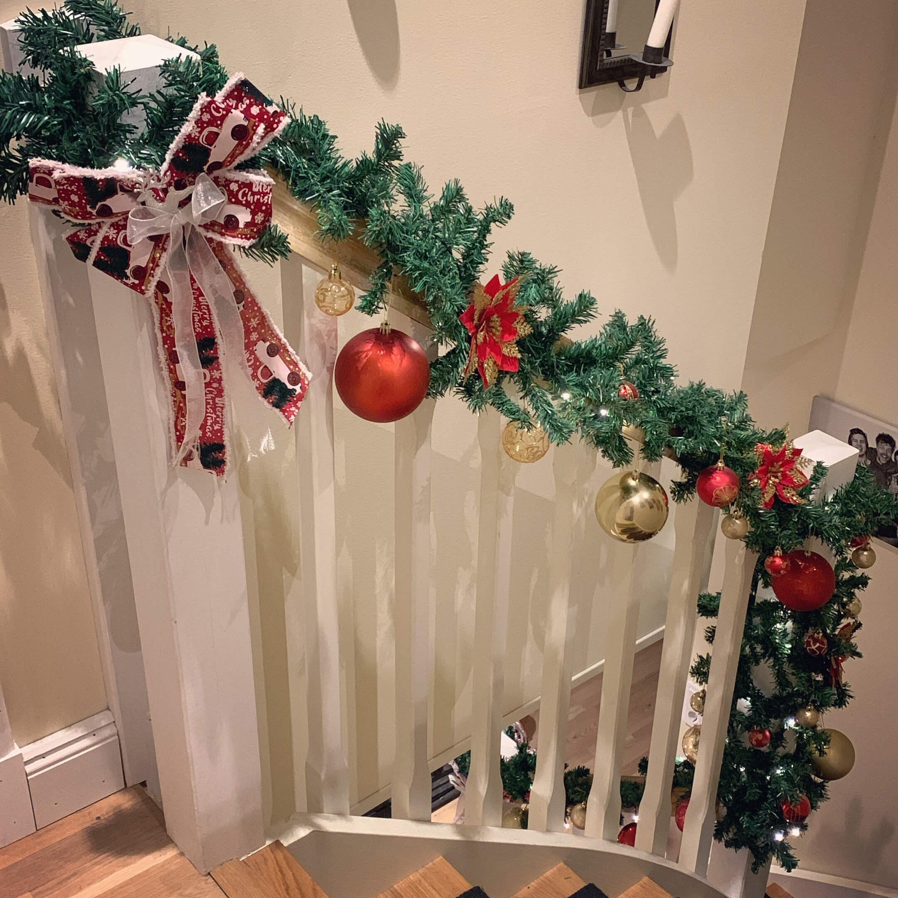

Second hand–älskare
Jag är besatt av tekoppar, tekannor och lantlig heminredning. Nästan allt i mitt hem är fyndat på loppisar, second hand–butiker eller via Marketplace.
Autistisk, heltidsdrömmare och författare till emotionellt intensiva berättelser där kvinnorna är sköra och ömma, männen hårda och beskyddande och där sluten är svårvunna.
Jag skriver om kärlek som vågar möta mörkret. Mina berättelser växer fram ur frågor om skuld, försoning och hopp – och viskningar från världar bortom vår.
Jag dras till relationer där allting står på spel: där hjärtat riskerar att gå sönder för att något större ska kunna läkas. Enemies to lovers, ljus mot mörker, förtärande passion och en kärlek som vägrar ge upp – det är där jag trivs.
När jag inte skriver hittar du mig med en bok i handen, musiken på hög volym eller djupt försjunken i nya världar, scener och känslor.
Min egen resa genom mörker, tro, helande och återupprättelse färgar allt jag skriver. Jag vill att mina böcker ska kännas – som ett slag i magen, en bön, en kyss och en viskning om att ljuset alltid, till slut, hittar en väg in.
Om du älskar intensiva känslor, moraliskt komplicerade val, svåra män med mjuka sidor och hjältinnor som vågar brista – då tror jag att du och mina världar kommer trivas bra tillsammans.
Utforska mina böcker
Jag är besatt av tekoppar, tekannor och lantlig heminredning. Nästan allt i mitt hem är fyndat på loppisar, second hand–butiker eller via Marketplace.

Film och tv-serier är min terapi. Favoriterna är många: Lord of the Rings, Narnia, Avatar, Twilight och allt som andas magi och äventyr.

Jag älskar allt från storslagna spel som Skyrim,
 

Jag är en sann julälskare — mitt hem förvandlas varje år till en magisk vintervärld med stora dekorationer, mistlar, julstrumpor vid öppna spisen och en maxad julgran. Jag älskar att ge bort genomtänkta julklappar!